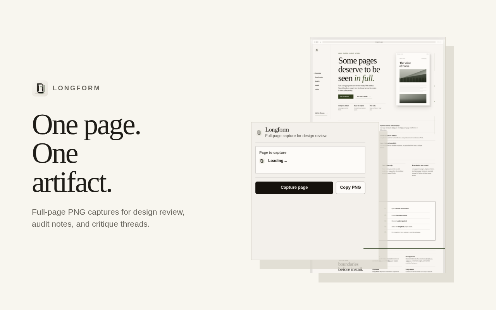

Long pages. Clear story.
Some pages deserve to be seen in full.
Turn a long page into one review-ready PNG artifact. Save it locally or copy it into the thread where the review is already happening.
Complete artifact
One page, start to finish.
Trust the output
No stitching or partial saves.
Two exits
Save a PNG, or copy one.

How it works
One capture, one file, one review thread.
-
01
Open a normal website page
Use any standard
http://orhttps://page in Chrome or Chromium. -
02
Create a capture artifact
Longform scans the full scroll area and produces one continuous PNG.
-
03
Save PNG or Copy PNG
Use a local file for durable evidence, or paste the PNG into a critique thread.
Made for design review, not screenshot collecting.
Longform keeps the page sequence together so layout, copy, and below-the-fold details can be discussed as one artifact.
Two exits only.
Save when you need durable evidence. Copy when the next tool accepts pasted PNGs.
Boundaries are named.
Unsupported pages, clipboard limits, and large-page limits are reported instead of hidden behind vague errors.
Current install path
Load it unpacked in Chrome.
This release is distributed as an unpacked extension. The install path is explicit, and so are the limits, until a Chrome Web Store build exists.
- Open chrome://extensions.
- Enable Developer mode.
- Choose Load unpacked.
- Select the longform project folder.
- Pin Longform, then capture a normal web page.
Support and limits
Clear boundaries before install.
- Supported
- Chrome and Chromium-based browsers on standard
http://andhttps://pages. - Unsupported
- Browser-internal URLs such as
chrome://,edge://, extension pages, and similar restricted surfaces. - Clipboard
- Copy PNG writes from the extension popup during the click gesture. Keep the popup open until copy finishes. Delivery still depends on browser support for image clipboard writes.
- Large pages
- Chromium canvas limits can stop a capture. Longform reports the boundary instead of saving a partial artifact.